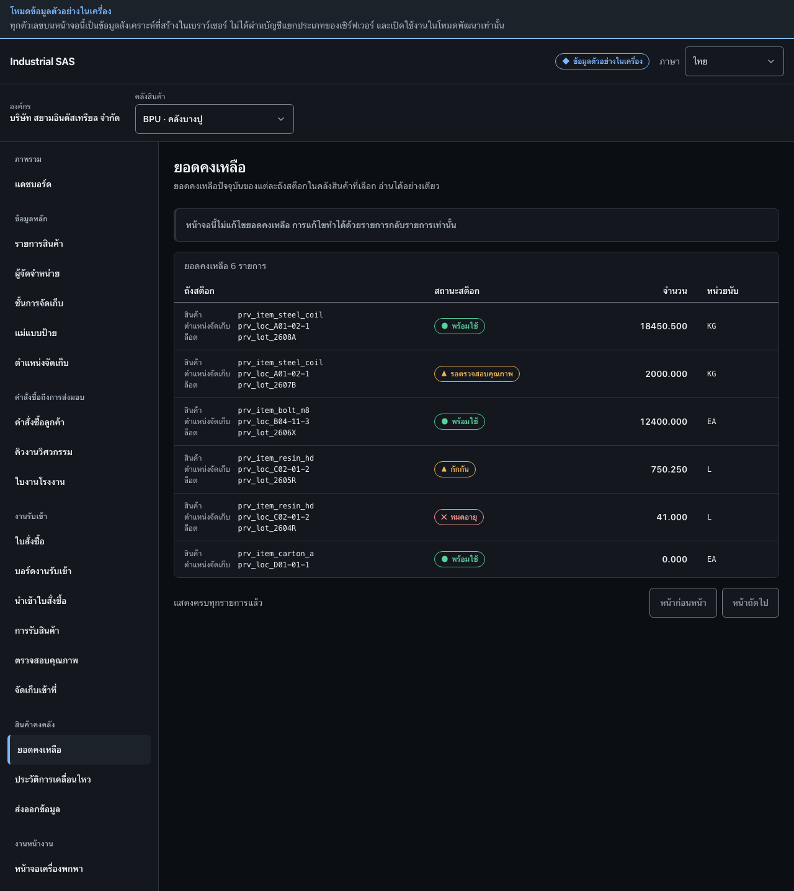

ตรวจสอบยอดคงเหลือCheck inventory balances
อ่านยอดคงเหลือตามสินค้า ตำแหน่งจัดเก็บ ล็อต และสถานะสต็อกRead balances by item, storage location, lot, and stock status.
สิ่งที่ต้องมีก่อนเริ่มBefore you start
- เลือกคลังสินค้าที่ต้องการตรวจสอบแล้วThe warehouse to inspect is selected
- มีการรับสินค้าหรือรายการบัญชีแยกประเภทเกิดขึ้นแล้วอย่างน้อยหนึ่งรายการAt least one receipt or ledger entry has been posted

ขั้นตอนSteps
- ในกรอบ 1 หาแถวจากสินค้า ตำแหน่งจัดเก็บ และล็อตIn box 1, find the row by item, storage location, and lot.
- ตรวจสอบสถานะสต็อกก่อนดูจำนวน เช่น พร้อมใช้ รอตรวจสอบคุณภาพ กักกัน หรือหมดอายุCheck the stock status before the quantity: available, awaiting QC, quarantined, or expired.
- อ่านจำนวนคู่กับหน่วยนับเสมอAlways read a quantity together with its unit of measure.
ตรวจว่างานสำเร็จอย่างไรHow to tell it worked
- พบแถวที่ตรงกับสินค้า ตำแหน่ง ล็อต และสถานะที่ต้องการตรวจสอบThe row matching the item, location, lot, and status under review is found.
- หน้านี้เป็นแบบอ่านอย่างเดียว การแก้ไขยอดต้องทำด้วยรายการกลับรายการหรือขั้นตอนที่มีหลักฐาน ห้ามแก้ตัวเลขโดยตรงThis screen is read-only: a balance is corrected by a reversal or an evidenced procedure, never by editing a number.